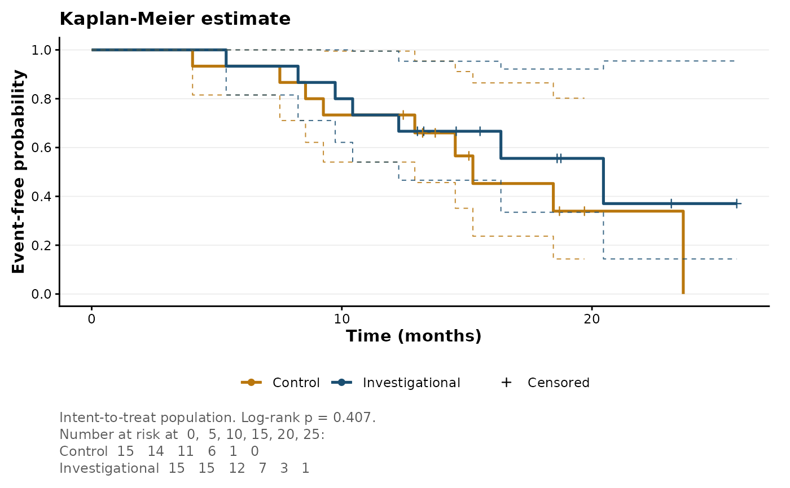

Kaplan-Meier curve with number at risk
plot_km.RdEvent-free curve with censoring ticks, dashed confidence limits, a log-rank p-value and the number at risk. Competing risks are not modelled.
Usage
plot_km(data, time, event, arm, xlab = "Time (months)",
ylab = "Event-free probability", title = "Kaplan-Meier estimate",
subtitle = NULL, conf_int = TRUE, risk_times = NULL, palette = NULL,
population = "Intent-to-treat population")Arguments
- data
Subject-level data.
- time,event,arm
Column names.
eventis 1 for the event and 0 for censoring.- xlab,ylab,title,subtitle
Labels.
- conf_int
Draw pointwise confidence limits.
- risk_times
Times for the number at risk. Default is
pretty().- palette
Named color vector.
- population
Analysis-population note printed in the caption.
Examples
onc <- simulate_oncology(n_per_arm = 15)
plot_km(onc$adsl, time = "os_months", event = "os_event", arm = "arm")
#> Warning: Removed 1 row containing missing values or values outside the scale range
#> (`geom_step()`).
#> Warning: Removed 1 row containing missing values or values outside the scale range
#> (`geom_step()`).
